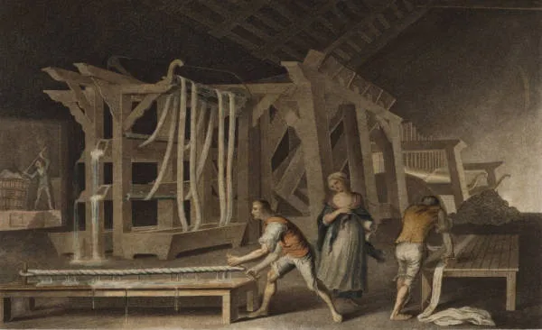
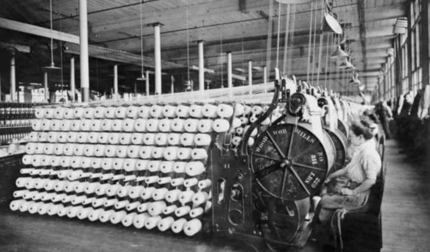

Com a mudança do cenário global dada pelo forte avanço na tecnologia, avanço das indústrias e a migração da população do campo para as cidades, a Revolução Industrial se inicia em 1760.
A Revolução Industrial foi um duradouro processo que se tornou marco histórico para a humanidade e pode ser definido como uma transformação radical na sociedade e na economia. Iniciada na Inglaterra aproximadamente no final do século 18, expandiu-se para outros países europeus, impulsionando o crescimento econômico e a urbanização.
A Revolução provocou mudanças profundas nas dinâmicas da sociedade ao introduzir novas formas de produção, organização do trabalho e relações econômicas. A transição da produção rural para a industrialização nas cidades impulsionou o crescimento urbano, transformando as metrópoles da época em núcleos industriais e deslocando a ênfase econômica dos setores terciários para a produção industrial.

Segundo Osvaldo Coggiola, professor de História Contemporânea da Faculdade de Filosofia, Letras e Ciências Humanas (FFLCH) da USP, “a paisagem rural e urbana nunca mais foi a mesma: na segunda metade do século XIX, toda a paisagem natural inglesa tinha sido alterada pela ação industrial do homem, nada restando de suas florestas originais”.
Além disso, ela redefiniu a relação entre ciência, tecnologia e produção. Conforme explica Coggiola, a separação entre esses elementos “se desfez no interior do processo de transformação industrial do capitalismo”. A mecanização, a utilização de novas fontes de energia e a transformação dos meios de produção em capital foram aspectos-chave desse processo.

Dentre os impactos negativos e positivos gerados pelo evento, por um lado, a introdução de máquinas e a mecanização da produção aumentaram a eficiência e a produtividade, multiplicando o rendimento do trabalho e impulsionando a produção global. No entanto, essa transformação também resultou em mudanças nas relações de trabalho, com a subdivisão das tarefas nas fábricas e a limitação do domínio técnico dos trabalhadores sobre seu próprio trabalho.
A ascensão do capitalismo industrial substituiu o papel dominante dos comerciantes na economia, levando ao declínio do artesanato tradicional e das associações corporativas.